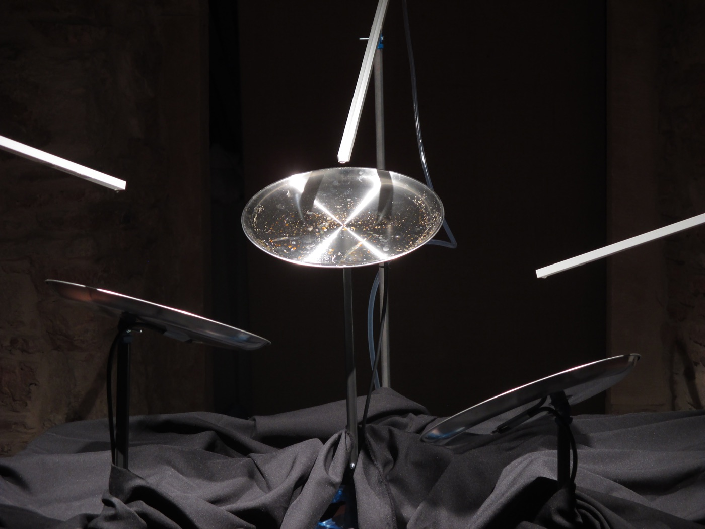
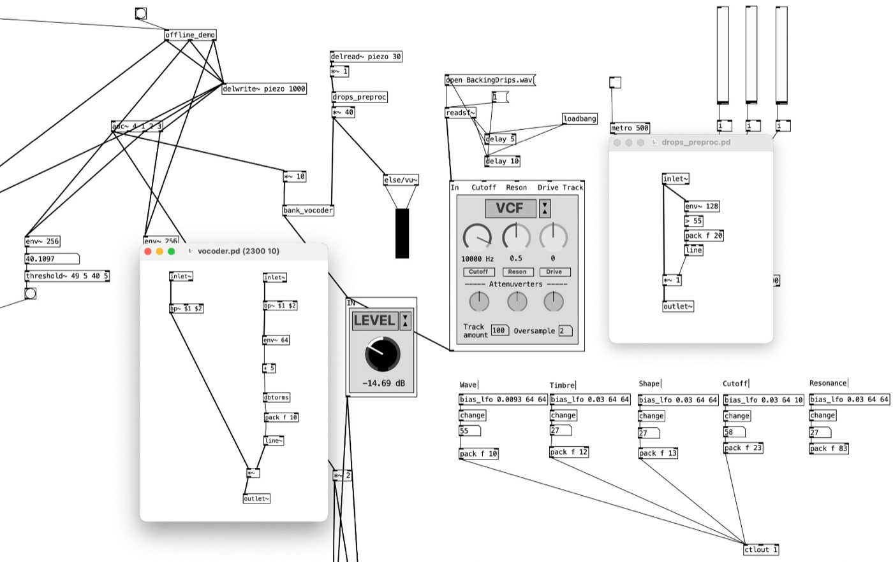
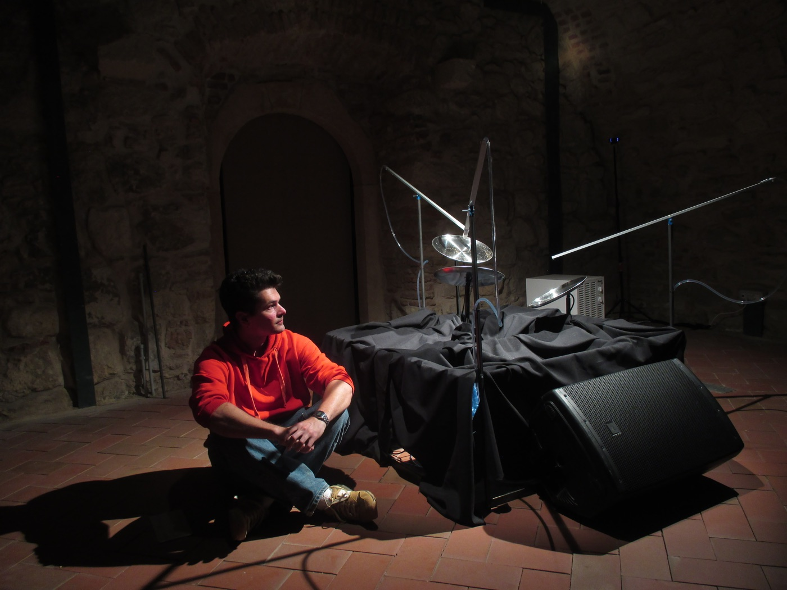
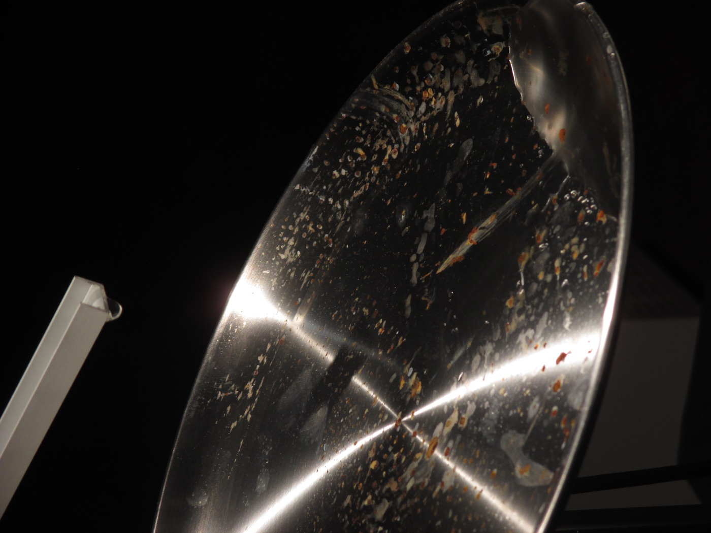

home / artistic projects / rains of the anthropocene
Rains of the Anthropocene
2026 · generative sound / installation
| Year | 2026 |
|---|---|
| Medium | Interactive Sound Installation |
| Tools | Generative Audio, Sensor Tracking, Historical Climate Data |


About this project
Rains of the Anthropocene is a generative sound installation that explores the erosion of the Earth's hydrological cycles through human presence. Physical droplets turn into a melodic baseline derived from historical precipitation data. However, the environment is never truly isolated. As visitors move around the sculpture, their presence is captured and fed into the system as a force against the natural balance.
By centering the audience as the catalyst for change, it reminds us that we are no longer mere observers, but the ones bringing the storm.
Sound architecture


The piece is built in Pure Data as a vocoder, with the synthesised voice acting as the carrier and the physical rain as the modulator. The carrier is a generative melodic line: a 2nd-order Markov chain walks through seven diatonic triads derived from historical precipitation data, gating notes through a phasor oscillator whose wave, timbre, cutoff, resonance, decay, and glide are slowly drifted by independent low-frequency oscillators.
The modulator comes from three piezo sensors mounted under the sculpture, each picking up the impact of a physical droplet, alongside a fourth channel carrying a hardware synth voice that is itself shaped by the same vocoder. All four signals pass through envelope followers and threshold detectors, then a custom noise gate, before entering a twelve-band parallel vocoder bank. Each band is a matched pair of band-pass filters tuned to fixed centre frequencies between 101 Hz and 3.3 kHz; the modulator's per-band amplitude shapes the carrier's per-band amplitude in real time, so the rain literally speaks through the melody.
Visitor presence is captured by three distance sensors read over a serial connection. Their values drive a voltage-controlled filter on the master bus, warping timbre as people approach the sculpture. The final signal chain runs through delay and plate reverberation before reaching the speakers, leaving the audience inside the storm they are causing.
Images



